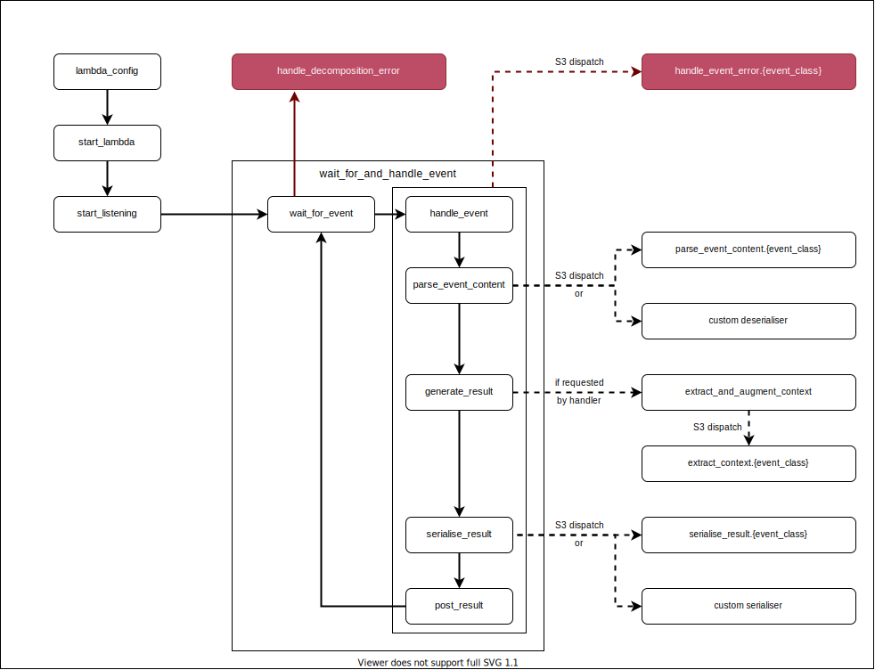

This vignette provides an overview of how the package is structures and how the functions are used. It is intended for package developers and contributors.
The runtime works by querying HTTP endpoints configured by AWS Lambda. These endpoints are determined by on the “AWS_LAMBDA_RUNTIME_API” environment variable set by AWS Lambda during initialisation. They generally won’t be available locally.
GET request to this endpoint and will wait until either a response is received or the Lambda instance is shut down for inactivity. When AWS Lambda receives an input from, say, an API Gateway, it will respond to R’s request with details of the input. We call the response to this request an invocation in this document, and invocations are interpreted as events.The next invocation and initialisation error endpoints are unique in each Lambda instance. The response and invocation error endpoints are determined by the request_id associated with each invocation. The request ID is given in the “lambda-runtime-aws-request-id” header in the response to the query to the next invocation endpoint.
Every Lambda instance is centred around a single function which handles any inputs. The handler function is determined by an environment variable which can be configured in one of two ways:
CMD to the Dockerfile which contains the runtime, orThe lambda_config function (run as part of start_lambda) picks up on this environment variable and identifies the R function to which it refers. This handler function is used to process all invocations.
Events need to be handled differently depending upon whether they are invoked directly, by an API Gateway, etc. Events are classified according to their detected invocation method, with their invocation stored as an S3 class. The following functions dispatch on this class:
parse_event_content converts the raw event content into arguments to be passed to the handler functionseralise_result converts the result into the form that will be sent back to Lambdaextract_context extracts metadata about the event as a list. If the handler function accepts a named context argument then it will receive the context as a value to that argument.handle_event_error deals with errors that occur during event handling. Some invocation types require errors to be formatted or handled in a very specific way.The main function — start_lambda — accepts an optional configuration provided by lambda_config. The default configuration should suffice if the handler is configured in either the Dockerfile or the AWS Lambda console. It will then run the internal start_listening function.
The start_listening function will augment the configuration with context extracted from the environment (using the extract_context_from_environment function). It will then set up an infinite loop that listens for invocations, interprets them as events, and processes them with the handler function.
Specifically, start_listening triggers the listening loop, which consists of wait_for_event and handle_event (combined into wait_for_and_handle_event). Once a response (called an invocation) is sent to the request made in wait_for_event, it is decomposed into an event, and classified according to its (detected) invocation type.
If an error occurs during this stage it is handled by handle_decomposition_error. If possible the error will be posted to the error invocation endpoint so that Lambda can process it, but otherwise it will simply be logged and then the runtime will move onto the next invocation.
The event is passed to handle_event which consists of the following steps:
parse_event_content interprets the event content as arguments to be handed to the handler function. The user can also provide a function to the deseraliser argument of start_listening (or start_lambda), which will override the standard parsing logic.generate_result passes these arguments to the handler function and generates a result. If the function accepts a named context argument the generate_result will call on extract_and_augment_context to generate the invocation context and pass it to the handler function in addition to the arguments.serialise_result converts the result into the response that will be sent to Lambda. The user can also provide a function to the serialiser argument of start_listening (or start_lambda), which will override the standard serialisation logic.post_result posts the serialised result to the response endpoint.Afterwards, the runtime will return to the wait_for_event function and process the next invocation that arrives. AWS Lambda may shut down the instance if it times out before another event invocation arrives.
Alternatively, if an error occurs during wait_for_event it will be handled by handle_decomposition_error, or if it occurs during handle_event it will be dispatched to the appropriate handle_event_error method according to the S3 class of the event. In either case this will not stop the R session — an error when processing a single event is a problem for that event alone. The runtime will return to the wait_for_event step.
All of these functions are diagrammed below, with boxes representing functions which are grouped together according to the primary function that calls each of them in sequence. Errors are shown in red.
